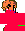

AGE: 16 going on 60
BLOOD TYPE: unknown
ZODIAC: Capricorn
MOON: Scorpio Rising
 art practice
art practice
rom hacking, queer glitches, autobiographical games, expanded cinema, post-studio practice, poetry
educator
DIY game dev for artists and beginners, queer games history, analog signal manipulation, magnetic media preservation
curator
pop-up arcades, experimental video games, archival interrogation, media installation
swampbabes | founder, diy queer art games collectice
Queer Games Bundle | co-founder, large-scale resource sharing project
Visual Studies Workshop (Rochester, NY) | Assistant Curator and Preservation Specialist

MFA Visual Studies | Visual Studies Workshop
BA Creative Writing | SUNY Oswego
contact for magic and crap: nilsonthomascarroll@gmail.com